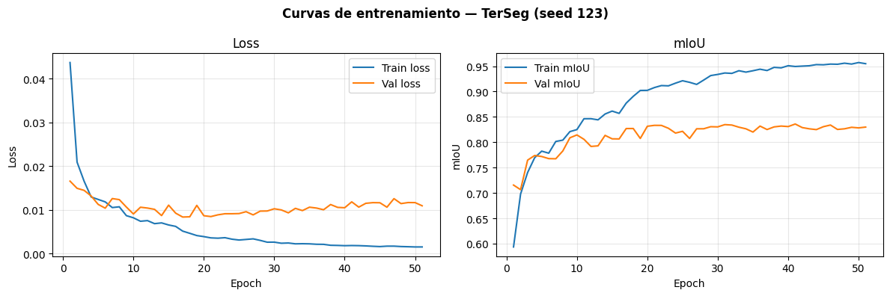
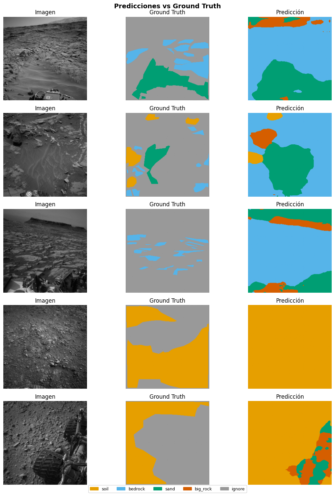

05d — TerSeg (Dual-Branch ResNet-34 + Swin-Tiny)#
Paper: Fan et al. — TerSeg: A dual-branch semantic segmentation network for Mars terrain and autonomous path planning
DOI: 10.1016/j.eswa.2025.126397 — Expert Systems With Applications 270 (2025)
Arquitectura:
Branch_C: ResNet-34 pretrained — extrae features locales
Branch_T: Swin-Tiny (timm, pretrained) — extrae features globales
FL/FG modules: fusión ponderada entre ramas (local-first en capas tempranas, global-first en capas tardías)
FLGA decoder: agrega features multi-escala de distintas granularidades
Limitación importante: Swin-Tiny pretrained requiere input 224×224.
Solución: interpolación de los feature maps de entrada antes de Branch_T, no de la imagen completa.
0. Setup#
import os, sys
from pathlib import Path
IN_COLAB = 'google.colab' in sys.modules
if IN_COLAB:
from google.colab import drive
drive.mount('/content/drive')
PROJECT_ROOT = Path('/content/drive/MyDrive/ai4mars_DL-v3')
sys.path.append(str(PROJECT_ROOT / 'notebooks'))
else:
# En local: este notebook está en notebooks/, root es el padre
PROJECT_ROOT = Path.cwd().parent
if not (PROJECT_ROOT / 'processed').exists():
PROJECT_ROOT = Path.cwd().parent.parent
print(f'ROOT: {PROJECT_ROOT} | existe: {PROJECT_ROOT.exists()}')
ROOT: c:\Users\Hp\Documents\GitHub\ai4mars_DL-v3 | existe: True
import torch
import torch.nn as nn
import torch.nn.functional as F
from torchvision.models import resnet34, ResNet34_Weights
import timm
import numpy as np
import matplotlib.pyplot as plt
import pandas as pd
from pathlib import Path
from mars_utils import (
set_seed, load_norm_stats, load_split,
build_dataloaders, FocalLoss,
train_one_epoch, evaluate, train_model, run_multi_seed,
append_benchmark_results, plot_best_seed_curves,
print_summary_table, visualize_predictions, count_parameters,
NUM_CLASSES, IGNORE_INDEX, SEEDS, BENCHMARK_CSV, CHECKPOINTS_DIR
)
DEVICE = torch.device('cuda' if torch.cuda.is_available() else 'cpu')
print(f'Device: {DEVICE}')
if DEVICE.type == 'cuda':
print(f'GPU: {torch.cuda.get_device_name(0)}')
Device: cuda
GPU: NVIDIA GeForce RTX 4050 Laptop GPU
1. Configuración#
MODEL_NAME = 'TerSeg'
FAST_SUBSET = False # False = entrenamiento completo; True solo para debug local
LR = 1e-4
MAX_EPOCHS = 80
PATIENCE = 10
BATCH_SIZE = 32
NUM_WORKERS = 6
FOCAL_ALPHA = 0.25
FOCAL_GAMMA = 2.0
# Dimensiones del Swin-Tiny pretrained
SWIN_IMG_SIZE = 224 # limitación del pretrained; las imágenes se interpolan internamente
print(f'Modo: {"FAST SUBSET" if FAST_SUBSET else "PRODUCCIÓN"}')
print(f'Batch size: {BATCH_SIZE} | num_workers: {NUM_WORKERS}')
print(f'SWIN input interpolado a: {SWIN_IMG_SIZE}×{SWIN_IMG_SIZE}')
Modo: PRODUCCIÓN
Batch size: 32 | num_workers: 6
SWIN input interpolado a: 224×224
2. Datos#
df_train, df_val, df_gold = load_split()
mean, std = load_norm_stats()
# ── Bug 6 fix: derivar stem de image_path, NO usar df_train['stem'] ──
train_ids = set(Path(p).stem for p in df_train['image_path'])
gold_ids = set(Path(p).stem for p in df_gold['image_path'])
assert len(train_ids & gold_ids) == 0, '⚠️ DATA LEAKAGE detectado'
print(f'✅ Train: {len(df_train)} | Val: {len(df_val)} | Gold: {len(df_gold)}')
print(f'Normalización — mean: {mean} | std: {std}')
✅ Split cargado — train: 4200 | val: 1800 | gold test: 322
✅ Train: 4200 | Val: 1800 | Gold: 322
Normalización — mean: [0.2303263779898021, 0.2303263779898021, 0.2303263779898021] | std: [0.10591342097577364, 0.10591342097577364, 0.10591342097577364]
3. Arquitectura — TerSeg#
class FusionModule(nn.Module):
"""Fusión ligera FL/FG: proyecta ambas ramas a un ancho común."""
def __init__(self, cnn_ch: int, tr_ch: int, out_ch: int, cnn_dominant: bool = True):
super().__init__()
self.cnn_proj = nn.Conv2d(cnn_ch, out_ch, 1, bias=False)
self.tr_proj = nn.Conv2d(tr_ch, out_ch, 1, bias=False)
init_cnn = 0.7 if cnn_dominant else 0.3
self.w_cnn = nn.Parameter(torch.tensor(init_cnn))
self.w_tr = nn.Parameter(torch.tensor(1.0 - init_cnn))
self.norm = nn.BatchNorm2d(out_ch)
self.relu = nn.ReLU(inplace=True)
def forward(self, r, t):
if r.shape[-2:] != t.shape[-2:]:
t = F.interpolate(t, size=r.shape[-2:], mode='bilinear', align_corners=False)
fused = self.w_cnn * self.cnn_proj(r) + self.w_tr * self.tr_proj(t)
return self.relu(self.norm(fused))
class FLGA(nn.Module):
"""Decoder progresivo ligero usado por la implementación rápida de TerSeg v2."""
def __init__(self, channels: list[int], num_classes: int):
super().__init__()
self.ups = nn.ModuleList()
self.convs = nn.ModuleList()
for i in range(len(channels) - 1, 0, -1):
self.ups.append(nn.Sequential(
nn.Conv2d(channels[i], channels[i - 1], 1, bias=False),
nn.BatchNorm2d(channels[i - 1]),
nn.ReLU(inplace=True),
))
self.convs.append(nn.Sequential(
nn.Conv2d(channels[i - 1] * 2, channels[i - 1], 3, padding=1, bias=False),
nn.BatchNorm2d(channels[i - 1]),
nn.ReLU(inplace=True),
))
self.head = nn.Conv2d(channels[0], num_classes, 1)
def forward(self, features: list[torch.Tensor]):
x = features[-1]
skips = features[:-1][::-1]
for up, conv, skip in zip(self.ups, self.convs, skips):
x = up(x)
x = F.interpolate(x, size=skip.shape[-2:], mode='bilinear', align_corners=False)
x = conv(torch.cat([x, skip], dim=1))
return self.head(x)
class TerSeg(nn.Module):
"""TerSeg ligero: ResNet-34 + Swin-Tiny con fusiones a 64 canales."""
def __init__(self, num_classes: int = NUM_CLASSES, out_ch: int = 64,
swin_img_size: int = 224):
super().__init__()
self.swin_img_size = swin_img_size
# Branch_C: ResNet-34
rn = resnet34(weights=ResNet34_Weights.DEFAULT)
self.c_stem = nn.Sequential(rn.conv1, rn.bn1, rn.relu, rn.maxpool)
self.c_layer1 = rn.layer1 # 64ch, H/4
self.c_layer2 = rn.layer2 # 128ch, H/8
self.c_layer3 = rn.layer3 # 256ch, H/16
self.c_layer4 = rn.layer4 # 512ch, H/32
# Branch_T: Swin-Tiny
self.swin = timm.create_model(
'swin_tiny_patch4_window7_224',
pretrained=True,
features_only=True,
out_indices=(0, 1, 2, 3),
)
swin_chs = self.swin.feature_info.channels() # [96, 192, 384, 768]
# FL: etapas locales dominadas por CNN; FG: etapas globales dominadas por Swin.
self.fl1 = FusionModule(64, swin_chs[0], out_ch, cnn_dominant=True)
self.fl2 = FusionModule(128, swin_chs[1], out_ch, cnn_dominant=True)
self.fg3 = FusionModule(256, swin_chs[2], out_ch, cnn_dominant=False)
self.fg4 = FusionModule(512, swin_chs[3], out_ch, cnn_dominant=False)
self.decoder = FLGA([out_ch] * 4, num_classes)
def _swin_forward(self, x):
x_swin = F.interpolate(
x,
size=(self.swin_img_size, self.swin_img_size),
mode='bilinear',
align_corners=False,
)
feats = self.swin(x_swin)
return [f.permute(0, 3, 1, 2).contiguous() if f.dim() == 4 else f for f in feats]
def forward(self, x):
H, W = x.shape[-2:]
c0 = self.c_stem(x)
r1 = self.c_layer1(c0)
r2 = self.c_layer2(r1)
r3 = self.c_layer3(r2)
r4 = self.c_layer4(r3)
t1, t2, t3, t4 = self._swin_forward(x)
f1 = self.fl1(r1, t1)
f2 = self.fl2(r2, t2)
f3 = self.fg3(r3, t3)
f4 = self.fg4(r4, t4)
out = self.decoder([f1, f2, f3, f4])
return F.interpolate(out, size=(H, W), mode='bilinear', align_corners=False)
def build_model():
return TerSeg(num_classes=NUM_CLASSES, out_ch=64, swin_img_size=SWIN_IMG_SIZE)
# Verificación
_m = build_model().to(DEVICE)
_m.eval()
with torch.no_grad():
_x = torch.randn(2, 3, 256, 256).to(DEVICE)
_out = _m(_x)
print(f'Forward OK — salida: {_out.shape}')
n_params = count_parameters(_m)
print(f'Parámetros entrenables: {n_params:.2f}M (esperado: ~49.19M)')
del _m, _x, _out
Forward OK — salida: torch.Size([2, 4, 256, 256])
Parámetros entrenables: 49.19M (esperado: ~49.19M)
4. Loss, Optimizer y Scheduler#
def criterion_fn():
return FocalLoss(alpha=FOCAL_ALPHA, gamma=FOCAL_GAMMA,
ignore_index=IGNORE_INDEX)
def optimizer_fn(params):
return torch.optim.Adam(params, lr=LR)
def scheduler_fn(optimizer):
return torch.optim.lr_scheduler.ReduceLROnPlateau(
optimizer, mode='max', patience=5, factor=0.5, verbose=True
)
print('✅ Loss: FocalLoss (α=0.25, γ=2.0)')
print(' Optimizer: Adam (lr=1e-4)')
print(' Scheduler: ReduceLROnPlateau (mode=max, patience=5, factor=0.5)')
✅ Loss: FocalLoss (α=0.25, γ=2.0)
Optimizer: Adam (lr=1e-4)
Scheduler: ReduceLROnPlateau (mode=max, patience=5, factor=0.5)
5. Entrenamiento Multi-Seed#
⚠️ Bug 7 fix: NO pasar mean, std, max_epochs. Usar num_epochs.
summary = run_multi_seed(
model_fn = build_model,
df_train = df_train,
df_val = df_val,
df_gold = df_gold,
criterion_fn = criterion_fn,
optimizer_fn = optimizer_fn,
scheduler_fn = scheduler_fn,
model_name = MODEL_NAME,
device = DEVICE,
num_epochs = MAX_EPOCHS, # 'num_epochs', no 'max_epochs'
patience = PATIENCE,
batch_size = BATCH_SIZE,
num_workers = NUM_WORKERS,
fast_subset = FAST_SUBSET,
n_train_fast = 200,
n_val_fast = 50,
)
# mean y std NO van aquí — run_multi_seed los carga con load_norm_stats()
───────────────────────────────────────────────────────
Seed 42 | TerSeg
Warning: You are sending unauthenticated requests to the HF Hub. Please set a HF_TOKEN to enable higher rate limits and faster downloads.
c:\Users\Hp\miniconda3\envs\mars_dl\Lib\site-packages\torch\optim\lr_scheduler.py:62: UserWarning: The verbose parameter is deprecated. Please use get_last_lr() to access the learning rate.
warnings.warn(
Entrenamiento desde cero
============================================================
TerSeg_seed42 | device=cuda | AMP=True
epochs=80 | patience=10 | aux_weight=0.0
============================================================
Ep 1/80 | loss=0.0424 mIoU=0.5787 | val_loss=0.0172 val_mIoU=0.6793 | rock=0.0317
Ep 2/80 | loss=0.0206 mIoU=0.6863 | val_loss=0.0246 val_mIoU=0.7024 | rock=0.2644
Ep 3/80 | loss=0.0162 mIoU=0.7311 | val_loss=0.0166 val_mIoU=0.7279 | rock=0.3136
Checkpoint periódico guardado (epoch 3)
Ep 4/80 | loss=0.0151 mIoU=0.7413 | val_loss=0.0127 val_mIoU=0.7507 | rock=0.3226
Ep 5/80 | loss=0.0131 mIoU=0.7653 | val_loss=0.0119 val_mIoU=0.7548 | rock=0.3044
Ep 6/80 | loss=0.0124 mIoU=0.7664 | val_loss=0.0158 val_mIoU=0.7409 | rock=0.3419
Checkpoint periódico guardado (epoch 6)
Ep 7/80 | loss=0.0118 mIoU=0.7730 | val_loss=0.0124 val_mIoU=0.7670 | rock=0.3853
Ep 8/80 | loss=0.0100 mIoU=0.8061 | val_loss=0.0116 val_mIoU=0.7786 | rock=0.3833
Ep 9/80 | loss=0.0089 mIoU=0.8101 | val_loss=0.0089 val_mIoU=0.7955 | rock=0.4187
Checkpoint periódico guardado (epoch 9)
Ep 10/80 | loss=0.0087 mIoU=0.8260 | val_loss=0.0108 val_mIoU=0.8078 | rock=0.4911
Ep 11/80 | loss=0.0074 mIoU=0.8306 | val_loss=0.0105 val_mIoU=0.8106 | rock=0.5014
Ep 12/80 | loss=0.0076 mIoU=0.8419 | val_loss=0.0107 val_mIoU=0.8104 | rock=0.5273
Checkpoint periódico guardado (epoch 12)
Ep 13/80 | loss=0.0066 mIoU=0.8514 | val_loss=0.0130 val_mIoU=0.7870 | rock=0.4404
Ep 14/80 | loss=0.0068 mIoU=0.8462 | val_loss=0.0106 val_mIoU=0.8159 | rock=0.5055
Ep 15/80 | loss=0.0067 mIoU=0.8599 | val_loss=0.0090 val_mIoU=0.8109 | rock=0.4765
Checkpoint periódico guardado (epoch 15)
Ep 16/80 | loss=0.0071 mIoU=0.8477 | val_loss=0.0106 val_mIoU=0.8066 | rock=0.4883
Ep 17/80 | loss=0.0066 mIoU=0.8609 | val_loss=0.0109 val_mIoU=0.8059 | rock=0.5179
Ep 18/80 | loss=0.0070 mIoU=0.8529 | val_loss=0.0121 val_mIoU=0.8042 | rock=0.5027
Checkpoint periódico guardado (epoch 18)
Ep 19/80 | loss=0.0056 mIoU=0.8802 | val_loss=0.0116 val_mIoU=0.7977 | rock=0.4636
Ep 20/80 | loss=0.0061 mIoU=0.8700 | val_loss=0.0114 val_mIoU=0.7981 | rock=0.4439
Ep 21/80 | loss=0.0047 mIoU=0.8940 | val_loss=0.0091 val_mIoU=0.8226 | rock=0.5148
Checkpoint periódico guardado (epoch 21)
Ep 22/80 | loss=0.0039 mIoU=0.9025 | val_loss=0.0096 val_mIoU=0.8198 | rock=0.5078
Ep 23/80 | loss=0.0037 mIoU=0.9089 | val_loss=0.0100 val_mIoU=0.8185 | rock=0.4982
Ep 24/80 | loss=0.0034 mIoU=0.9135 | val_loss=0.0098 val_mIoU=0.8211 | rock=0.5016
Checkpoint periódico guardado (epoch 24)
Ep 25/80 | loss=0.0031 mIoU=0.9208 | val_loss=0.0098 val_mIoU=0.8174 | rock=0.4942
Ep 26/80 | loss=0.0030 mIoU=0.9229 | val_loss=0.0105 val_mIoU=0.8144 | rock=0.4820
Ep 27/80 | loss=0.0030 mIoU=0.9242 | val_loss=0.0102 val_mIoU=0.8193 | rock=0.4980
Checkpoint periódico guardado (epoch 27)
Ep 28/80 | loss=0.0026 mIoU=0.9307 | val_loss=0.0126 val_mIoU=0.8202 | rock=0.5113
Ep 29/80 | loss=0.0027 mIoU=0.9298 | val_loss=0.0111 val_mIoU=0.8217 | rock=0.5156
Ep 30/80 | loss=0.0026 mIoU=0.9330 | val_loss=0.0106 val_mIoU=0.8242 | rock=0.5181
Checkpoint periódico guardado (epoch 30)
Ep 31/80 | loss=0.0025 mIoU=0.9332 | val_loss=0.0116 val_mIoU=0.8230 | rock=0.5205
Ep 32/80 | loss=0.0024 mIoU=0.9346 | val_loss=0.0110 val_mIoU=0.8199 | rock=0.5069
Ep 33/80 | loss=0.0023 mIoU=0.9380 | val_loss=0.0113 val_mIoU=0.8191 | rock=0.4948
Checkpoint periódico guardado (epoch 33)
Ep 34/80 | loss=0.0023 mIoU=0.9386 | val_loss=0.0116 val_mIoU=0.8223 | rock=0.5109
Ep 35/80 | loss=0.0023 mIoU=0.9379 | val_loss=0.0114 val_mIoU=0.8256 | rock=0.5222
Ep 36/80 | loss=0.0023 mIoU=0.9404 | val_loss=0.0117 val_mIoU=0.8281 | rock=0.5354
Checkpoint periódico guardado (epoch 36)
Ep 37/80 | loss=0.0022 mIoU=0.9391 | val_loss=0.0122 val_mIoU=0.8271 | rock=0.5458
Ep 38/80 | loss=0.0023 mIoU=0.9400 | val_loss=0.0121 val_mIoU=0.8257 | rock=0.5275
Ep 39/80 | loss=0.0022 mIoU=0.9408 | val_loss=0.0120 val_mIoU=0.8239 | rock=0.5192
Checkpoint periódico guardado (epoch 39)
Ep 40/80 | loss=0.0021 mIoU=0.9415 | val_loss=0.0128 val_mIoU=0.8227 | rock=0.5197
Ep 41/80 | loss=0.0020 mIoU=0.9425 | val_loss=0.0125 val_mIoU=0.8235 | rock=0.5164
Ep 42/80 | loss=0.0019 mIoU=0.9471 | val_loss=0.0131 val_mIoU=0.8236 | rock=0.5224
Checkpoint periódico guardado (epoch 42)
Ep 43/80 | loss=0.0019 mIoU=0.9460 | val_loss=0.0122 val_mIoU=0.8291 | rock=0.5339
Ep 44/80 | loss=0.0018 mIoU=0.9495 | val_loss=0.0116 val_mIoU=0.8261 | rock=0.5233
Ep 45/80 | loss=0.0017 mIoU=0.9501 | val_loss=0.0125 val_mIoU=0.8303 | rock=0.5326
Checkpoint periódico guardado (epoch 45)
Ep 46/80 | loss=0.0018 mIoU=0.9511 | val_loss=0.0126 val_mIoU=0.8313 | rock=0.5355
Ep 47/80 | loss=0.0017 mIoU=0.9505 | val_loss=0.0128 val_mIoU=0.8278 | rock=0.5295
Ep 48/80 | loss=0.0016 mIoU=0.9506 | val_loss=0.0122 val_mIoU=0.8285 | rock=0.5254
Checkpoint periódico guardado (epoch 48)
Ep 49/80 | loss=0.0016 mIoU=0.9548 | val_loss=0.0138 val_mIoU=0.8219 | rock=0.5102
Ep 50/80 | loss=0.0016 mIoU=0.9557 | val_loss=0.0135 val_mIoU=0.8207 | rock=0.4994
Ep 51/80 | loss=0.0015 mIoU=0.9552 | val_loss=0.0139 val_mIoU=0.8301 | rock=0.5419
Checkpoint periódico guardado (epoch 51)
Ep 52/80 | loss=0.0016 mIoU=0.9535 | val_loss=0.0133 val_mIoU=0.8277 | rock=0.5260
Ep 53/80 | loss=0.0015 mIoU=0.9563 | val_loss=0.0133 val_mIoU=0.8262 | rock=0.5215
Ep 54/80 | loss=0.0015 mIoU=0.9561 | val_loss=0.0138 val_mIoU=0.8272 | rock=0.5279
Checkpoint periódico guardado (epoch 54)
Ep 55/80 | loss=0.0015 mIoU=0.9568 | val_loss=0.0132 val_mIoU=0.8238 | rock=0.5122
Ep 56/80 | loss=0.0014 mIoU=0.9568 | val_loss=0.0128 val_mIoU=0.8285 | rock=0.5275
Early stopping en epoch 56 (sin mejora por 10 epochs)
Mejor val mIoU=0.8313 (epoch 46) | tiempo=3485s
Checkpoint periódico eliminado
Gold test mIoU=0.8440
Progreso guardado (1/3 seeds)
───────────────────────────────────────────────────────
Seed 123 | TerSeg
Entrenamiento desde cero
============================================================
TerSeg_seed123 | device=cuda | AMP=True
epochs=80 | patience=10 | aux_weight=0.0
============================================================
Ep 1/80 | loss=0.0437 mIoU=0.5934 | val_loss=0.0166 val_mIoU=0.7155 | rock=0.1713
Ep 2/80 | loss=0.0209 mIoU=0.6978 | val_loss=0.0149 val_mIoU=0.7064 | rock=0.1539
Ep 3/80 | loss=0.0166 mIoU=0.7403 | val_loss=0.0145 val_mIoU=0.7646 | rock=0.3618
Checkpoint periódico guardado (epoch 3)
Ep 4/80 | loss=0.0130 mIoU=0.7694 | val_loss=0.0132 val_mIoU=0.7738 | rock=0.3674
Ep 5/80 | loss=0.0124 mIoU=0.7824 | val_loss=0.0113 val_mIoU=0.7718 | rock=0.3576
Ep 6/80 | loss=0.0118 mIoU=0.7784 | val_loss=0.0104 val_mIoU=0.7676 | rock=0.3417
Checkpoint periódico guardado (epoch 6)
Ep 7/80 | loss=0.0105 mIoU=0.8015 | val_loss=0.0126 val_mIoU=0.7674 | rock=0.4230
Ep 8/80 | loss=0.0107 mIoU=0.8041 | val_loss=0.0123 val_mIoU=0.7828 | rock=0.4060
Ep 9/80 | loss=0.0087 mIoU=0.8209 | val_loss=0.0107 val_mIoU=0.8087 | rock=0.5134
Checkpoint periódico guardado (epoch 9)
Ep 10/80 | loss=0.0082 mIoU=0.8249 | val_loss=0.0091 val_mIoU=0.8144 | rock=0.4987
Ep 11/80 | loss=0.0074 mIoU=0.8463 | val_loss=0.0106 val_mIoU=0.8058 | rock=0.4728
Ep 12/80 | loss=0.0076 mIoU=0.8464 | val_loss=0.0104 val_mIoU=0.7917 | rock=0.4313
Checkpoint periódico guardado (epoch 12)
Ep 13/80 | loss=0.0069 mIoU=0.8441 | val_loss=0.0101 val_mIoU=0.7928 | rock=0.4183
Ep 14/80 | loss=0.0070 mIoU=0.8556 | val_loss=0.0087 val_mIoU=0.8135 | rock=0.4825
Ep 15/80 | loss=0.0066 mIoU=0.8614 | val_loss=0.0111 val_mIoU=0.8067 | rock=0.5112
Checkpoint periódico guardado (epoch 15)
Ep 16/80 | loss=0.0062 mIoU=0.8569 | val_loss=0.0093 val_mIoU=0.8065 | rock=0.4683
Ep 17/80 | loss=0.0052 mIoU=0.8771 | val_loss=0.0084 val_mIoU=0.8270 | rock=0.5235
Ep 18/80 | loss=0.0047 mIoU=0.8905 | val_loss=0.0084 val_mIoU=0.8270 | rock=0.5204
Checkpoint periódico guardado (epoch 18)
Ep 19/80 | loss=0.0041 mIoU=0.9021 | val_loss=0.0110 val_mIoU=0.8075 | rock=0.4723
Ep 20/80 | loss=0.0039 mIoU=0.9023 | val_loss=0.0087 val_mIoU=0.8315 | rock=0.5400
Ep 21/80 | loss=0.0036 mIoU=0.9078 | val_loss=0.0085 val_mIoU=0.8333 | rock=0.5451
Checkpoint periódico guardado (epoch 21)
Ep 22/80 | loss=0.0035 mIoU=0.9118 | val_loss=0.0089 val_mIoU=0.8332 | rock=0.5437
Ep 23/80 | loss=0.0036 mIoU=0.9112 | val_loss=0.0091 val_mIoU=0.8275 | rock=0.5311
Ep 24/80 | loss=0.0033 mIoU=0.9165 | val_loss=0.0091 val_mIoU=0.8181 | rock=0.4876
Checkpoint periódico guardado (epoch 24)
Ep 25/80 | loss=0.0031 mIoU=0.9213 | val_loss=0.0092 val_mIoU=0.8215 | rock=0.4979
Ep 26/80 | loss=0.0033 mIoU=0.9182 | val_loss=0.0096 val_mIoU=0.8075 | rock=0.4614
Ep 27/80 | loss=0.0034 mIoU=0.9140 | val_loss=0.0089 val_mIoU=0.8265 | rock=0.5276
Checkpoint periódico guardado (epoch 27)
Ep 28/80 | loss=0.0030 mIoU=0.9226 | val_loss=0.0097 val_mIoU=0.8265 | rock=0.5201
Ep 29/80 | loss=0.0026 mIoU=0.9315 | val_loss=0.0098 val_mIoU=0.8306 | rock=0.5365
Ep 30/80 | loss=0.0026 mIoU=0.9337 | val_loss=0.0103 val_mIoU=0.8303 | rock=0.5454
Checkpoint periódico guardado (epoch 30)
Ep 31/80 | loss=0.0024 mIoU=0.9366 | val_loss=0.0100 val_mIoU=0.8347 | rock=0.5570
Ep 32/80 | loss=0.0024 mIoU=0.9358 | val_loss=0.0093 val_mIoU=0.8339 | rock=0.5421
Ep 33/80 | loss=0.0022 mIoU=0.9411 | val_loss=0.0104 val_mIoU=0.8297 | rock=0.5360
Checkpoint periódico guardado (epoch 33)
Ep 34/80 | loss=0.0023 mIoU=0.9383 | val_loss=0.0098 val_mIoU=0.8265 | rock=0.5230
Ep 35/80 | loss=0.0022 mIoU=0.9410 | val_loss=0.0106 val_mIoU=0.8200 | rock=0.4991
Ep 36/80 | loss=0.0021 mIoU=0.9440 | val_loss=0.0104 val_mIoU=0.8319 | rock=0.5491
Checkpoint periódico guardado (epoch 36)
Ep 37/80 | loss=0.0021 mIoU=0.9414 | val_loss=0.0100 val_mIoU=0.8250 | rock=0.5086
Ep 38/80 | loss=0.0019 mIoU=0.9477 | val_loss=0.0112 val_mIoU=0.8302 | rock=0.5359
Ep 39/80 | loss=0.0019 mIoU=0.9467 | val_loss=0.0106 val_mIoU=0.8319 | rock=0.5421
Checkpoint periódico guardado (epoch 39)
Ep 40/80 | loss=0.0018 mIoU=0.9509 | val_loss=0.0105 val_mIoU=0.8309 | rock=0.5321
Ep 41/80 | loss=0.0019 mIoU=0.9494 | val_loss=0.0118 val_mIoU=0.8359 | rock=0.5608
Ep 42/80 | loss=0.0018 mIoU=0.9501 | val_loss=0.0106 val_mIoU=0.8289 | rock=0.5251
Checkpoint periódico guardado (epoch 42)
Ep 43/80 | loss=0.0018 mIoU=0.9508 | val_loss=0.0115 val_mIoU=0.8264 | rock=0.5169
Ep 44/80 | loss=0.0017 mIoU=0.9531 | val_loss=0.0117 val_mIoU=0.8249 | rock=0.5142
Ep 45/80 | loss=0.0016 mIoU=0.9528 | val_loss=0.0116 val_mIoU=0.8307 | rock=0.5350
Checkpoint periódico guardado (epoch 45)
Ep 46/80 | loss=0.0017 mIoU=0.9541 | val_loss=0.0106 val_mIoU=0.8339 | rock=0.5432
Ep 47/80 | loss=0.0017 mIoU=0.9538 | val_loss=0.0126 val_mIoU=0.8252 | rock=0.5242
Ep 48/80 | loss=0.0016 mIoU=0.9559 | val_loss=0.0114 val_mIoU=0.8265 | rock=0.5192
Checkpoint periódico guardado (epoch 48)
Ep 49/80 | loss=0.0016 mIoU=0.9542 | val_loss=0.0117 val_mIoU=0.8294 | rock=0.5351
Ep 50/80 | loss=0.0015 mIoU=0.9572 | val_loss=0.0117 val_mIoU=0.8283 | rock=0.5285
Ep 51/80 | loss=0.0015 mIoU=0.9549 | val_loss=0.0109 val_mIoU=0.8299 | rock=0.5305
Early stopping en epoch 51 (sin mejora por 10 epochs)
Mejor val mIoU=0.8359 (epoch 41) | tiempo=3174s
Checkpoint periódico eliminado
Gold test mIoU=0.8711
Progreso guardado (2/3 seeds)
───────────────────────────────────────────────────────
Seed 7 | TerSeg
Entrenamiento desde cero
============================================================
TerSeg_seed7 | device=cuda | AMP=True
epochs=80 | patience=10 | aux_weight=0.0
============================================================
Ep 1/80 | loss=0.0424 mIoU=0.5949 | val_loss=0.0176 val_mIoU=0.7061 | rock=0.1594
Ep 2/80 | loss=0.0192 mIoU=0.7075 | val_loss=0.0162 val_mIoU=0.7330 | rock=0.2990
Ep 3/80 | loss=0.0162 mIoU=0.7381 | val_loss=0.0115 val_mIoU=0.7747 | rock=0.3662
Checkpoint periódico guardado (epoch 3)
Ep 4/80 | loss=0.0134 mIoU=0.7680 | val_loss=0.0123 val_mIoU=0.7293 | rock=0.2248
Ep 5/80 | loss=0.0121 mIoU=0.7854 | val_loss=0.0102 val_mIoU=0.7918 | rock=0.4304
Ep 6/80 | loss=0.0116 mIoU=0.7782 | val_loss=0.0112 val_mIoU=0.7996 | rock=0.4591
Checkpoint periódico guardado (epoch 6)
Ep 7/80 | loss=0.0100 mIoU=0.8003 | val_loss=0.0100 val_mIoU=0.7881 | rock=0.4089
Ep 8/80 | loss=0.0113 mIoU=0.7996 | val_loss=0.0153 val_mIoU=0.7692 | rock=0.4117
Ep 9/80 | loss=0.0095 mIoU=0.8115 | val_loss=0.0095 val_mIoU=0.7910 | rock=0.4112
Checkpoint periódico guardado (epoch 9)
Ep 10/80 | loss=0.0093 mIoU=0.8093 | val_loss=0.0112 val_mIoU=0.7954 | rock=0.4676
Ep 11/80 | loss=0.0082 mIoU=0.8325 | val_loss=0.0092 val_mIoU=0.8049 | rock=0.4708
Ep 12/80 | loss=0.0075 mIoU=0.8512 | val_loss=0.0108 val_mIoU=0.8065 | rock=0.4825
Checkpoint periódico guardado (epoch 12)
Ep 13/80 | loss=0.0068 mIoU=0.8473 | val_loss=0.0086 val_mIoU=0.8236 | rock=0.5105
Ep 14/80 | loss=0.0062 mIoU=0.8575 | val_loss=0.0100 val_mIoU=0.8248 | rock=0.5362
Ep 15/80 | loss=0.0054 mIoU=0.8759 | val_loss=0.0104 val_mIoU=0.8044 | rock=0.4674
Checkpoint periódico guardado (epoch 15)
Ep 16/80 | loss=0.0059 mIoU=0.8793 | val_loss=0.0123 val_mIoU=0.7684 | rock=0.4493
Ep 17/80 | loss=0.0069 mIoU=0.8561 | val_loss=0.0109 val_mIoU=0.8131 | rock=0.5353
Ep 18/80 | loss=0.0071 mIoU=0.8527 | val_loss=0.0097 val_mIoU=0.8207 | rock=0.5172
Checkpoint periódico guardado (epoch 18)
Ep 19/80 | loss=0.0055 mIoU=0.8731 | val_loss=0.0090 val_mIoU=0.8313 | rock=0.5464
Ep 20/80 | loss=0.0047 mIoU=0.8886 | val_loss=0.0098 val_mIoU=0.8210 | rock=0.5123
Ep 21/80 | loss=0.0055 mIoU=0.8817 | val_loss=0.0107 val_mIoU=0.8178 | rock=0.5241
Checkpoint periódico guardado (epoch 21)
Ep 22/80 | loss=0.0052 mIoU=0.8759 | val_loss=0.0092 val_mIoU=0.8269 | rock=0.5366
Ep 23/80 | loss=0.0043 mIoU=0.8897 | val_loss=0.0101 val_mIoU=0.7930 | rock=0.3959
Ep 24/80 | loss=0.0039 mIoU=0.9040 | val_loss=0.0098 val_mIoU=0.8270 | rock=0.5209
Checkpoint periódico guardado (epoch 24)
Ep 25/80 | loss=0.0036 mIoU=0.9025 | val_loss=0.0104 val_mIoU=0.8248 | rock=0.5406
Ep 26/80 | loss=0.0030 mIoU=0.9145 | val_loss=0.0095 val_mIoU=0.8341 | rock=0.5489
Ep 27/80 | loss=0.0029 mIoU=0.9257 | val_loss=0.0097 val_mIoU=0.8354 | rock=0.5604
Checkpoint periódico guardado (epoch 27)
Ep 28/80 | loss=0.0028 mIoU=0.9236 | val_loss=0.0111 val_mIoU=0.8315 | rock=0.5464
Ep 29/80 | loss=0.0027 mIoU=0.9279 | val_loss=0.0096 val_mIoU=0.8328 | rock=0.5454
Ep 30/80 | loss=0.0025 mIoU=0.9356 | val_loss=0.0110 val_mIoU=0.8306 | rock=0.5399
Checkpoint periódico guardado (epoch 30)
Ep 31/80 | loss=0.0027 mIoU=0.9312 | val_loss=0.0109 val_mIoU=0.8226 | rock=0.5239
Ep 32/80 | loss=0.0040 mIoU=0.9058 | val_loss=0.0104 val_mIoU=0.8315 | rock=0.5448
Ep 33/80 | loss=0.0027 mIoU=0.9296 | val_loss=0.0101 val_mIoU=0.8300 | rock=0.5276
Checkpoint periódico guardado (epoch 33)
Ep 34/80 | loss=0.0023 mIoU=0.9377 | val_loss=0.0104 val_mIoU=0.8253 | rock=0.5080
Ep 35/80 | loss=0.0022 mIoU=0.9400 | val_loss=0.0108 val_mIoU=0.8255 | rock=0.5150
Ep 36/80 | loss=0.0020 mIoU=0.9426 | val_loss=0.0115 val_mIoU=0.8265 | rock=0.5213
Checkpoint periódico guardado (epoch 36)
Ep 37/80 | loss=0.0021 mIoU=0.9408 | val_loss=0.0110 val_mIoU=0.8298 | rock=0.5215
Early stopping en epoch 37 (sin mejora por 10 epochs)
Mejor val mIoU=0.8354 (epoch 27) | tiempo=2317s
Checkpoint periódico eliminado
Gold test mIoU=0.7991
Progreso guardado (3/3 seeds)
============================================================
TerSeg: mIoU=0.8381 ± 0.0297 IC95=±0.0336
IoU(soil )=0.9805 ± 0.0033
IoU(bedrock )=0.9188 ± 0.0087
IoU(sand )=0.9433 ± 0.0061
IoU(big_rock )=0.5097 ± 0.1134
============================================================
Archivo de progreso eliminado (todos los seeds completados)
6. Resultados Agregados#
print_summary_table(summary)
============================================================
RESUMEN — TerSeg
============================================================
Métrica Media Std IC95
------------------------------------------------
mIoU 0.8381 0.0297 ± 0.0336
Pixel Accuracy 0.9775
------------------------------------------------
IoU soil 0.9805 0.0033
IoU bedrock 0.9188 0.0087
IoU sand 0.9433 0.0061
IoU big_rock 0.5097 0.1134
------------------------------------------------
Params (M) —
Tiempo medio (s) 2992
Epoch mejor (mean) 38.0
============================================================
plot_best_seed_curves(summary)

# ── Bug 9 fix: limpiar fila anterior del mismo modelo ──
if BENCHMARK_CSV.exists():
df_csv = pd.read_csv(BENCHMARK_CSV)
df_csv = df_csv[df_csv["model"] != MODEL_NAME]
df_csv.to_csv(BENCHMARK_CSV, index=False)
params_M = count_parameters(build_model())
append_benchmark_results(summary, params_M=params_M)
print('✅ Resultados guardados en results/benchmark_results.csv')
Resultados guardados en C:\Users\Hp\Documents\GitHub\ai4mars_DL-v3\results\benchmark_results.csv
✅ Resultados guardados en results/benchmark_results.csv
7. Visualización Cualitativa#
⚠️ Bug 8 fix: summary NO tiene ‘best_seed’ ni ‘checkpoints’. Calcular manualmente.
# ── Bug 8 fix: derivar best_seed manualmente ──
best_seed = max(summary["per_seed"], key=lambda r: r["mIoU"])["seed"]
best_miou = max(summary['per_seed'], key=lambda r: r['mIoU'])['mIoU']
ckpt_path = CHECKPOINTS_DIR / f"{MODEL_NAME}_seed{best_seed}_best.pth"
print(f"Mejor seed: {best_seed} | mIoU gold: {best_miou:.4f}")
best_model = build_model().to(DEVICE)
ckpt = torch.load(ckpt_path, map_location=DEVICE)
best_model.load_state_dict(ckpt["model_state"])
best_model.eval()
visualize_predictions(best_model, df_gold, DEVICE, mean=mean, std=std, n=5)
Mejor seed: 123 | mIoU gold: 0.8711

8. Resumen Final#
Campo |
Valor |
|---|---|
Modelo |
TerSeg |
Paper |
Fan et al., Expert Systems with Applications 270 (2025) |
Branch CNN |
ResNet-34 pretrained |
Branch Transformer |
Swin-Tiny (timm) |
Fusión |
FL (stages 1-2) + FG (stages 3-4) |
Decoder |
FLGA multi-escala |
Loss |
FocalLoss (α=0.25, γ=2.0) |
Optimizer |
Adam (lr=1e-4) |
Scheduler |
ReduceLROnPlateau (patience=5, factor=0.5) |
Swin input |
Interpolado a 224×224 internamente |
Referencia histórica (2.1k imgs) |
mIoU = 0.7498 ± 0.0089 |
Resultados del gold set exportados a results/benchmark_results.csv.